Ingeniería en Sistemas Informáticos
Bases de Datos Aplicada · Trabajo Cuatrimestral
Tablero de control para un outlet de zapatillas con sucursales
Entrega final
- Integrantes:
- Leonel Maximiliano Blumberg y Luciano Galo Migoni
- Número de grupo:
- COMPLETAR
- Docentes:
- Martina Gimenez · Alejo Nardon
- Fecha:
- 28/10/2026
- Repositorio:
- github.com/Leonel-Blumberg/Base-de-datos-actividad
Índice
- Descripción del proyecto
- Tecnologías utilizadas
- Entidades representadas
- Modelo canónico de la base de datos
- Consultas SQL y arquitectura
- Indicadores y semaforización
- Desglose de información: drill down y drill up
-
Pantallas del sistema
- 8.1 Inicio de sesión y registro
- 8.2 Resumen
- 8.3 Ventas por sucursal (cuatro niveles)
- 8.4 Stock
- 8.5 Clientes
- 8.6 Detalle de ventas
- Fundamentación de las decisiones de diseño
- Repositorio
1. Descripción del proyecto
El proyecto es un tablero de control (dashboard) web para una cadena de outlets de zapatillas con cinco sucursales en Argentina. El tablero toma la información de una base de datos PostgreSQL mediante consultas SQL y la transforma en indicadores y visualizaciones que ayudan a la gerencia a tomar decisiones sobre ventas, reposición de stock y fidelización de clientes.
El usuario final es el personal de gestión del outlet: la administración central, que necesita comparar el desempeño de todas las sucursales, y los gerentes de cada sucursal, que necesitan seguir su objetivo mensual, su stock por talle y la actividad de sus clientes.
1.1 Objetivo del tablero
- Comparar las ventas de cada sucursal contra su objetivo mensual y detectar rápidamente cuáles están por debajo.
- Analizar las ventas de lo general a lo particular: sucursal › marca › modelo › detalle de cada venta (drill down), y volver al nivel anterior (drill up).
- Anticipar quiebres de stock controlando cada combinación producto - talle - sucursal contra un stock mínimo.
- Identificar clientes activos, en riesgo e inactivos según los días desde su última compra, para orientar acciones comerciales.
1.2 Qué incluye la entrega final
-
Inicio de sesión validado contra la tabla
usuarios, con las contraseñas guardadas como hash. - Cinco pantallas funcionando: Resumen, Ventas por sucursal, Stock, Clientes y Detalle de ventas.
- Indicadores del mes (ventas, cumplimiento del objetivo, pares vendidos y ticket promedio) con su variación contra el mes anterior.
- Tres semáforos con tres estados cada uno y su referencia en pantalla.
- Drill down y drill up en cuatro niveles: sucursal, marca, modelo y detalle de ventas.
- Visualizaciones: gráfico de ventas por día, barras de cumplimiento y de participación, y distribución de pares vendidos por talle.
2. Tecnologías utilizadas
| Capa | Tecnología | Uso en el proyecto |
|---|---|---|
| Frontend | React 19 + Vite, React Router | Interfaz web (SPA): login, registro y las pantallas del tablero. Los gráficos se dibujan en SVG, sin librerías externas. Se comunica con la API por HTTP/JSON. |
| Backend | ASP.NET Core Web API (C#, .NET 10) | Expone los endpoints de autenticación y las consultas del tablero. Valida las credenciales y emite el token de sesión (JWT). |
| Acceso a datos | Npgsql (ADO.NET), sin ORM | Conexión de .NET con PostgreSQL. Todas las consultas son SQL escrito a mano y parametrizado. |
| Base de datos | PostgreSQL |
Motor relacional. Las tablas se crean y se cargan con scripts SQL
(CREATE TABLE e INSERT), sin migraciones. Las
reglas de los semáforos son funciones SQL y hay vistas para el stock y
la actividad de los clientes.
|
| Seguridad | PasswordHasher de ASP.NET Core Identity y JWT | Hash PBKDF2 (HMAC-SHA512, con sal) de las contraseñas y token firmado para proteger los endpoints del tablero. |
| Diseño | Figma | Mockups de las pantallas presentados en la primera entrega. |
| Versionado | Git + GitHub | Repositorio del código y la documentación. |
3. Entidades representadas
El tablero representa cuatro entidades principales, elegidas porque cubren las tres preguntas que se hace a diario la gestión de un outlet: cuánto se vende, qué se vende y a quién se le vende.
| Entidad | Por qué es relevante para el usuario del tablero |
|---|---|
| Sucursales | Es el primer nivel de análisis. Permite comparar el desempeño de cada local contra su objetivo mensual y decidir dónde intervenir. |
| Productos | Las zapatillas (modelo, marca, categoría y precio). Permiten saber qué marcas y modelos rotan más y cruzar las ventas con el stock por talle. |
| Clientes | Permiten medir la actividad y la recurrencia de compra, y detectar a los clientes que dejaron de comprar. |
| Ventas | Son el hecho que se mide: fecha, sucursal, cliente, medio de pago e importe, con su detalle de productos, talles y cantidades. |
Además se usan tablas de soporte: Marcas y Categorías (clasifican los productos), Stock (cantidad por producto, talle y sucursal), Objetivos de venta (meta mensual de cada sucursal), Detalle de ventas (líneas de cada venta) y Usuarios (acceso al tablero).
4. Modelo canónico de la base de datos
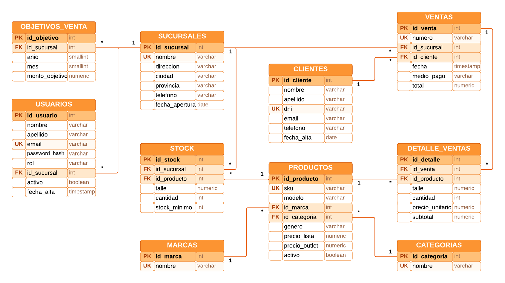
4.1 Relaciones principales
- Una sucursal tiene muchos objetivos de venta (uno por mes), muchos registros de stock y muchas ventas.
- Una marca y una categoría clasifican a muchos productos.
- Un producto aparece en muchos registros de stock (uno por sucursal y talle) y en muchas líneas de detalle de venta.
- Un cliente realiza muchas ventas y cada venta tiene una o más líneas.
- Un usuario puede estar asignado a una sucursal (gerente) o a ninguna (administración central).
4.2 Tablas y restricciones
| Tabla | Contenido | Claves y restricciones |
|---|---|---|
sucursales |
Locales del outlet: nombre, dirección, ciudad y provincia. | PK id_sucursal · UNIQUE nombre |
usuarios |
Cuentas con acceso al tablero y su rol. |
PK id_usuario · UNIQUE email · CHECK rol
(admin, gerente, consulta) · FK a sucursales
|
objetivos_venta |
Meta de facturación de cada sucursal por mes. | FK a sucursales · CHECK mes 1 a 12 y monto > 0 · UNIQUE (sucursal, año, mes) |
marcas, categorias |
Clasificación de los productos. | UNIQUE nombre |
productos |
Modelos de zapatilla con su precio de lista y de outlet. |
UNIQUE sku · FK a marcas y categorias · CHECK género y
precios > 0
|
stock |
Pares disponibles por producto, talle y sucursal, y su mínimo. | FK a sucursales y productos · CHECK cantidades >= 0 · UNIQUE (sucursal, producto, talle) |
clientes |
Compradores registrados. | UNIQUE dni |
ventas |
Cabecera de cada venta: sucursal, cliente, fecha, medio de pago y total. |
UNIQUE numero · FK a sucursales y clientes · CHECK medio
de pago y total >= 0
|
detalle_ventas |
Líneas de cada venta: producto, talle, cantidad y precio. | FK a ventas y productos · CHECK cantidad y precio > 0 · UNIQUE (venta, producto, talle) |
El diccionario de datos completo, campo por campo, está en el documento de
la primera entrega y en server/base de datos/01_crear_tablas.sql.
5. Consultas SQL y arquitectura
El navegador nunca accede a la base de datos. Cada pantalla le pide sus datos a la API con el token de sesión, la API ejecuta las consultas SQL parametrizadas con Npgsql y devuelve el resultado en JSON. El frontend solo da formato y dibuja: los totales, los porcentajes y los estados de los semáforos salen de las consultas.
Navegador (React) → API REST (ASP.NET Core + JWT) → SQL parametrizado (Npgsql) → PostgreSQL
5.1 Carga de la base de datos
La estructura y los datos se cargan con scripts SQL que la API ejecuta al
arrancar, en orden y dentro de una transacción. Todos se pueden ejecutar
varias veces sin duplicar datos (CREATE TABLE IF NOT EXISTS,
ON CONFLICT DO NOTHING, CREATE OR REPLACE).
| Script | Qué hace |
|---|---|
01_crear_tablas.sql |
Crea las 10 tablas con sus claves primarias y foráneas y las restricciones UNIQUE y CHECK. |
02_siembra_usuarios.sql |
Carga las cuentas de prueba con la contraseña hasheada. |
03_siembra_datos.sql |
Carga con INSERT 5 sucursales, 6 marcas, 3 categorías, 26
productos, 1.430 registros de stock, 2.800 clientes, 30 objetivos
mensuales, 9.308 ventas y 12.386 líneas de detalle, de abril a
septiembre de 2026. El total de cada venta es la suma de sus líneas.
|
04_vistas_y_funciones.sql |
Crea las funciones de los tres semáforos y las vistas
vista_stock y vista_actividad_clientes, que
usan varias pantallas.
|
5.2 Consultas de cada pantalla
| Pantalla | Endpoint | Qué consulta |
|---|---|---|
| Todas | GET /api/tablero/catalogos |
Meses con ventas, sucursales, marcas y fecha de referencia. |
| Resumen | GET /api/tablero/resumen |
Indicadores del mes y del anterior, cumplimiento por sucursal, conteo de stock y de clientes por estado y ventas por día. |
| Nivel 1 · Sucursal | GET /api/ventas/sucursales |
Ventas, tickets, pares y cumplimiento de cada sucursal. |
| Nivel 2 · Marca | …/sucursales/{id}/marcas |
Ventas y pares por marca en la sucursal, del mes y del anterior. |
| Nivel 3 · Modelo | …/marcas/{id}/modelos |
Ventas por modelo, stock total y peor estado de stock entre sus talles. |
| Nivel 4 · Detalle | …/productos/{id} |
Líneas de detalle_ventas paginadas y pares vendidos por talle. |
| Stock | GET /api/stock |
Stock de cada producto, talle y sucursal con su estado. |
| Clientes | GET /api/clientes |
Última compra, sucursal habitual, compras y estado de cada cliente. |
| Detalle de ventas | GET /api/ventas |
Ventas filtradas, ordenadas y paginadas, con los totales del filtro. |
El formato de cada respuesta está documentado en
docs/contrato-api.md del repositorio.
5.3 Semáforos en la base de datos
Las reglas de los semáforos están en funciones SQL, así todas las consultas
calculan los estados de la misma manera: estado_objetivo,
estado_stock y estado_cliente. Por ejemplo:
CREATE OR REPLACE FUNCTION estado_objetivo(ventas numeric, objetivo numeric)
RETURNS varchar LANGUAGE sql IMMUTABLE AS $$
SELECT CASE WHEN objetivo IS NULL THEN NULL
WHEN ventas >= objetivo THEN 'cumple'
WHEN ventas >= objetivo * 0.8 THEN 'atencion'
ELSE 'critico'
END
$$;
5.4 Ejemplos de consultas
Cumplimiento del objetivo de cada sucursal en el mes (semáforo del resumen y del nivel 1). Es una versión resumida: la consulta completa también calcula los tickets y los pares vendidos.
WITH ventas_mes AS (
SELECT id_sucursal, SUM(total) AS ventas
FROM ventas
WHERE fecha >= @desde AND fecha < @hasta
GROUP BY id_sucursal
)
SELECT s.id_sucursal, s.nombre,
COALESCE(vm.ventas, 0) AS ventas,
o.monto_objetivo AS objetivo,
ROUND(COALESCE(vm.ventas, 0) * 100 / o.monto_objetivo, 1) AS cumplimiento,
estado_objetivo(COALESCE(vm.ventas, 0), o.monto_objetivo) AS estado
FROM sucursales s
LEFT JOIN ventas_mes vm ON vm.id_sucursal = s.id_sucursal
LEFT JOIN objetivos_venta o ON o.id_sucursal = s.id_sucursal
AND o.anio = @anio AND o.mes = @mes
ORDER BY ventas DESC, s.nombre;
Nivel 2 del desglose: ventas de cada marca en la sucursal, del mes elegido y del anterior en una sola pasada (para la variación mensual):
WITH lineas AS (
SELECT p.id_marca, d.subtotal, d.cantidad, v.fecha >= @desde AS del_mes
FROM ventas v
JOIN detalle_ventas d ON d.id_venta = v.id_venta
JOIN productos p ON p.id_producto = d.id_producto
WHERE v.id_sucursal = @id_sucursal
AND v.fecha >= @desde_anterior AND v.fecha < @hasta
)
SELECT m.id_marca, m.nombre,
SUM(l.subtotal) FILTER (WHERE l.del_mes) AS ventas,
SUM(l.cantidad) FILTER (WHERE l.del_mes) AS pares,
COALESCE(SUM(l.subtotal) FILTER (WHERE NOT l.del_mes), 0) AS ventas_anterior
FROM lineas l
JOIN marcas m ON m.id_marca = l.id_marca
GROUP BY m.id_marca, m.nombre
HAVING SUM(l.subtotal) FILTER (WHERE l.del_mes) > 0
ORDER BY ventas DESC;
Actividad de los clientes (vista vista_actividad_clientes,
resumida). Los días se cuentan contra una fecha de referencia, el día
siguiente a la última venta registrada, y no contra la fecha actual: así el
estado no depende del día en que se mira el tablero.
WITH referencia AS (
SELECT COALESCE(MAX(fecha)::date + 1, current_date) AS fecha FROM ventas
),
compras AS (
SELECT id_cliente, MAX(fecha)::date AS ultima_compra, SUM(total) AS total_gastado
FROM ventas
GROUP BY id_cliente
)
SELECT c.id_cliente, c.nombre, c.apellido, co.ultima_compra,
r.fecha - co.ultima_compra AS dias,
estado_cliente(r.fecha - co.ultima_compra) AS estado
FROM clientes c
CROSS JOIN referencia r
LEFT JOIN compras co ON co.id_cliente = c.id_cliente;
6. Indicadores y semaforización
6.1 Indicadores del mes
| Indicador | Cálculo | Para qué le sirve al usuario |
|---|---|---|
| Ventas del mes | Suma de ventas.total y variación contra el mes anterior. |
Saber si el negocio vende más o menos que el mes pasado. |
| Cumplimiento del objetivo | Ventas del mes ÷ suma de objetivos_venta.monto_objetivo. |
Saber si se va a llegar a la meta y cuánto falta. |
| Pares vendidos | Suma de detalle_ventas.cantidad. |
Medir el volumen físico, que es lo que hay que reponer. |
| Ticket promedio | Ventas del mes ÷ cantidad de ventas. | Ver si cada cliente gasta más o menos (mix de productos y promociones). |
6.2 Semáforos
El tablero tiene tres semáforos con tres estados cada uno. El estado se calcula en la base de datos, con las funciones de la sección 5.3 aplicadas a los datos reales, y siempre se muestra con su texto (no solo con el color), acompañado de una referencia visible en la misma pantalla.
| Semáforo | Verde | Amarillo | Rojo |
|---|---|---|---|
| Cumplimiento del objetivo mensual por sucursal | Cumple 100% o más del objetivo |
Atención 80% a 99,9% |
Crítico menos del 80% |
| Stock por producto, talle y sucursal | Normal más del doble del mínimo |
Atención más del mínimo y hasta el doble |
Crítico igual o menor al mínimo (incluye sin stock) |
| Actividad de clientes | Activo compró en los últimos 30 días |
En riesgo última compra hace 31 a 90 días |
Inactivo más de 90 días o nunca compró |
- Objetivo: indica en qué sucursales hay que intervenir este mes. Aparece en el resumen y en los niveles 1 y 2 del desglose.
- Stock: en un outlet no hay reposición continua de cada talle, así que un talle agotado es una venta perdida. Aparece en la pantalla de stock, en el resumen y, para cada modelo, en el nivel 3 del desglose (se toma el peor estado entre sus talles).
- Clientes: separa a los clientes que hay que recuperar (en riesgo) de los que ya se perdieron (inactivos). Aparece en la pantalla de clientes y en el resumen.
7. Desglose de información: drill down y drill up
Las ventas se analizan en cuatro niveles. Al hacer clic en una fila se baja un nivel (drill down). Para subir (drill up) se puede usar el botón "Volver", la ruta de navegación (Todas las sucursales › Palermo › Nike), los indicadores de nivel o el botón "atrás" del navegador, porque cada nivel tiene su propia dirección web. El mes elegido se mantiene en todos los niveles.
| Nivel | Qué muestra | Navegación |
|---|---|---|
| 1 · Sucursal | Ventas, tickets, pares, participación y cumplimiento del objetivo de cada sucursal. | Clic en una sucursal: nivel 2 |
| 2 · Marca | Indicadores de la sucursal y ventas por marca, con precio promedio, participación y variación mensual. | Clic en una marca: nivel 3 Volver: nivel 1 |
| 3 · Modelo | Modelos de la marca vendidos en la sucursal, con precio, pares, ventas, stock y estado de stock. | Clic en un modelo: nivel 4 Volver: nivel 2 |
| 4 · Detalle | Cada línea de venta del modelo (fecha, n° de venta, cliente, talle, cantidad, precio y medio de pago) y los pares vendidos por talle. | Volver: nivel 3 |
8. Pantallas del sistema
Todas las pantallas del tablero comparten la barra lateral, los colores, la tipografía y el estilo de las tablas. Las pantallas de ventas tienen un selector de mes y las tablas grandes tienen filtros y paginación.
8.1 Inicio de sesión y registro
Las credenciales se validan contra la tabla usuarios. Con
credenciales incorrectas no se da acceso y se muestra el mensaje del backend;
con credenciales válidas se redirige al resumen.
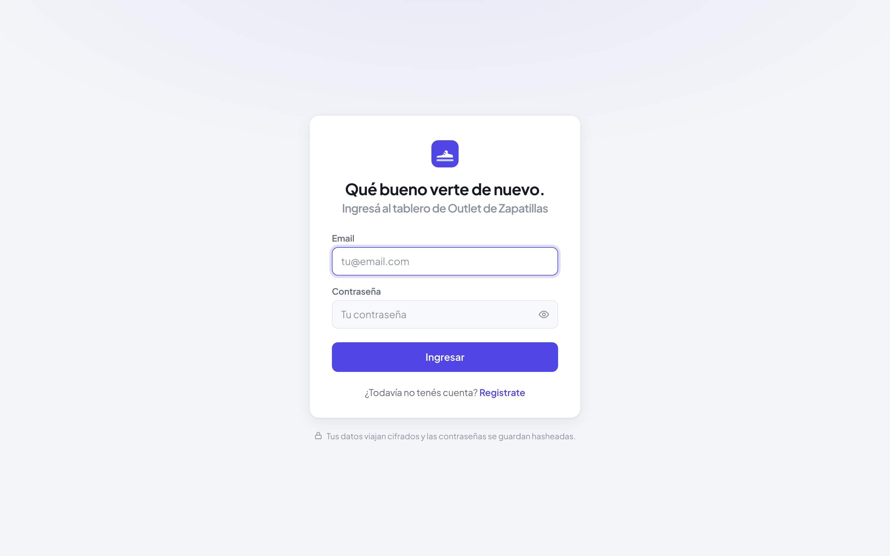
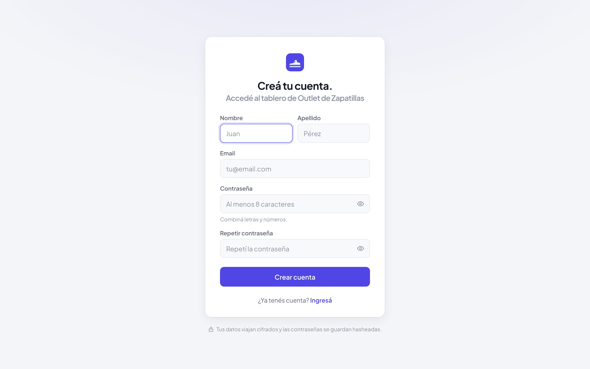
8.2 Resumen
Pantalla principal: los cuatro indicadores del mes, el semáforo de cumplimiento por sucursal con su referencia, el estado del stock y de los clientes, y el gráfico de ventas por día. Se puede filtrar por mes y por sucursal, y cada bloque lleva a su pantalla de detalle.
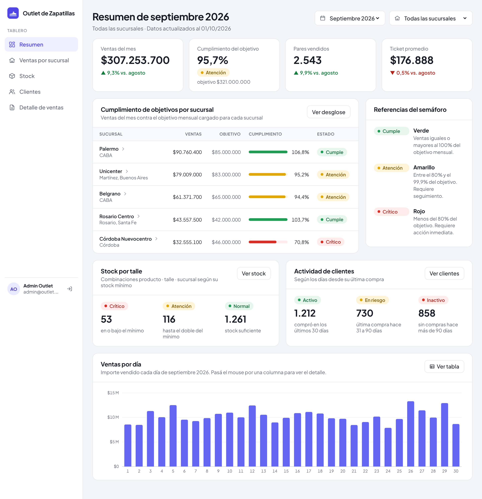
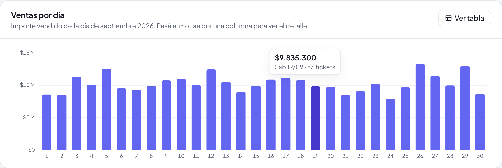
8.3 Ventas por sucursal: drill down en cuatro niveles
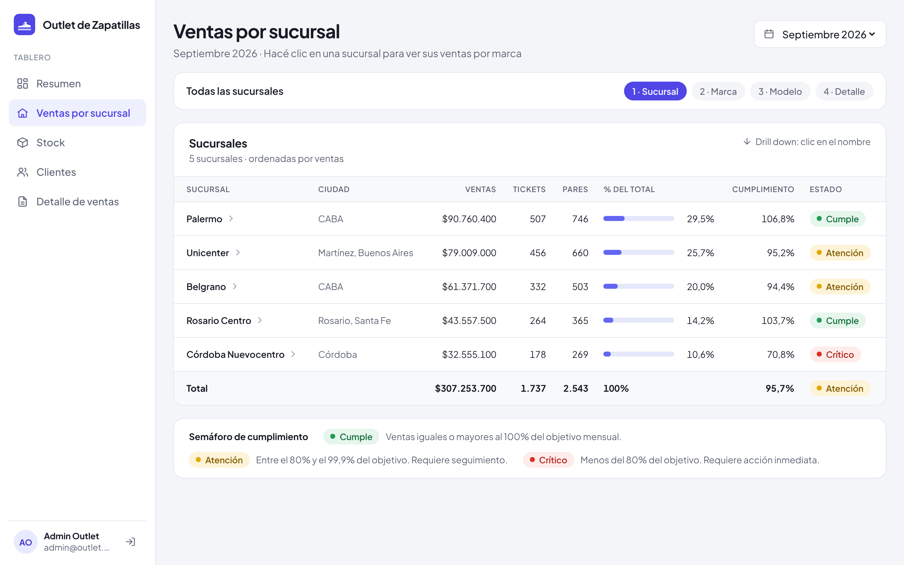
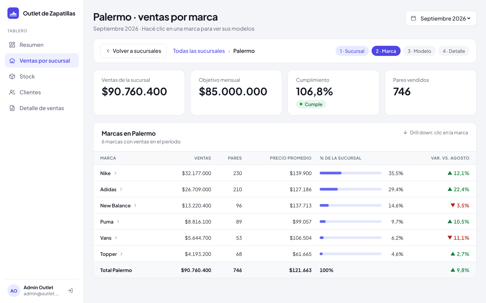
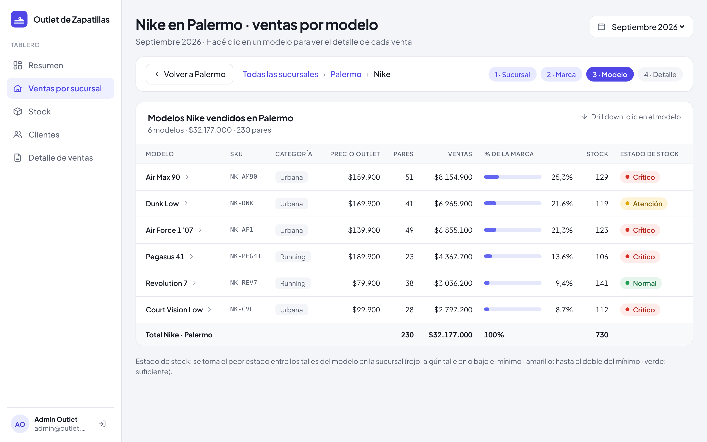
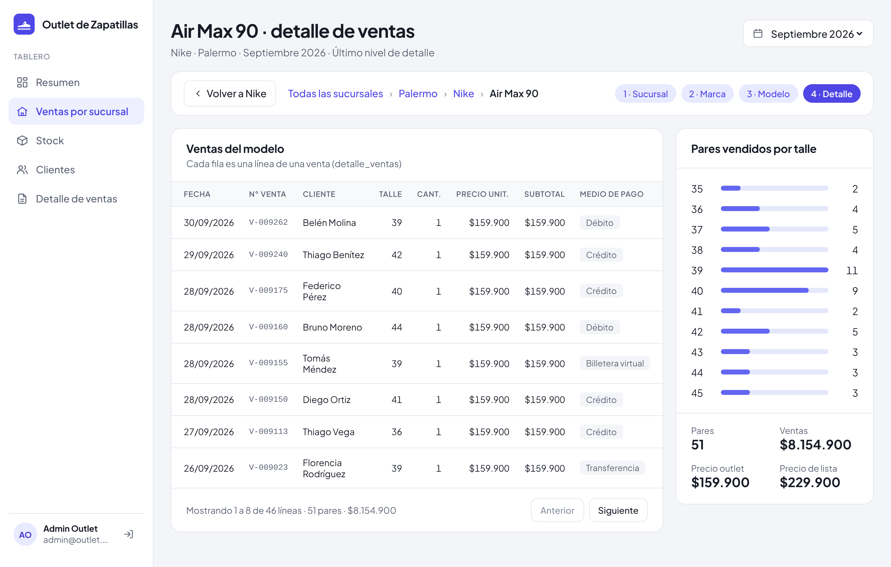
8.4 Stock
Una fila por producto, talle y sucursal, ordenada de la situación más crítica a la más holgada. Se puede buscar por modelo o SKU y filtrar por sucursal, marca y estado; los botones de estado muestran cuántas combinaciones hay en cada uno.
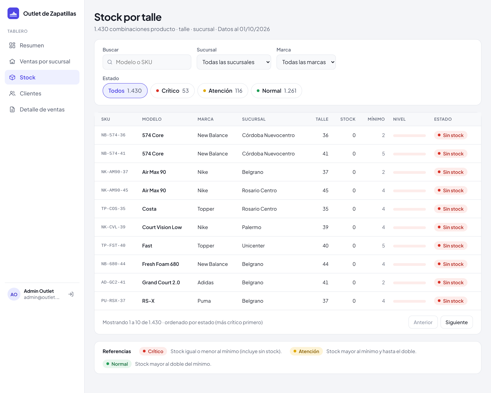
8.5 Clientes
Cada cliente con su sucursal habitual, sus compras de los últimos 12 meses, el total gastado y los días desde su última compra. Las tarjetas de arriba muestran cuántos clientes hay en cada estado y también filtran la tabla.
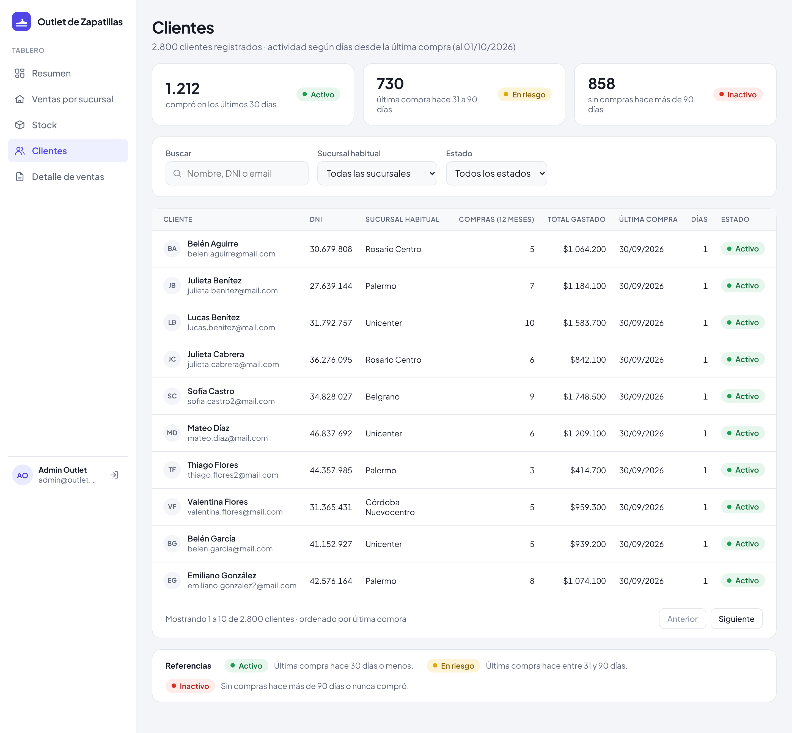
8.6 Detalle de ventas
Todas las ventas con filtros por fecha, sucursal y medio de pago, búsqueda por número de venta o cliente, orden por fecha o importe y paginación. Los totales corresponden a todas las ventas del filtro, no solo a la página.
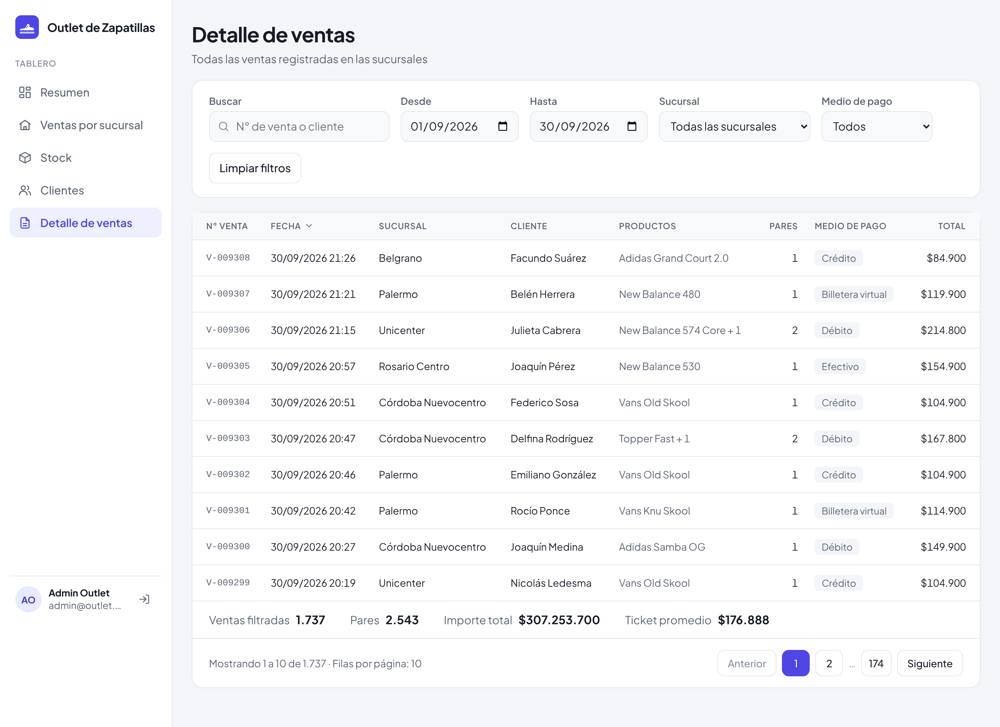
9. Fundamentación de las decisiones de diseño
9.1 Indicadores y entidades
- Los cuatro indicadores del resumen responden en un vistazo si el mes va bien: cuánto se vendió, si se llega a la meta, cuánto volumen se movió y cuánto gasta cada cliente. La variación contra el mes anterior le da contexto a cada número.
- Las entidades siguen el recorrido de una venta: dónde se vendió (sucursal), qué se vendió (producto, con su marca y talle) y a quién (cliente). Así cada pregunta del usuario tiene una pantalla.
- Cada semáforo apunta a una decisión concreta: dónde reforzar las ventas (objetivo), qué reponer (stock) y a quién contactar (clientes).
9.2 Visualizaciones
- Para comparar pocas sucursales, marcas o modelos se usan tablas con barras: la barra muestra la proporción de un vistazo y la tabla da el valor exacto.
- La evolución dentro del mes se muestra con un gráfico de columnas por día, con una sola serie y un solo eje para que no haya ambigüedad. Tiene detalle al pasar el mouse y una vista en tabla con los mismos datos.
- Los pares por talle se muestran como barras horizontales ordenadas por talle, porque lo que importa es la forma de la curva de talles.
- Los colores verde, amarillo y rojo se reservan para los semáforos y siempre van con su texto y su referencia, para que el estado se entienda aun sin distinguir los colores.
9.3 Navegación y coherencia
- El desglose va de lo general a lo particular en el mismo orden en que piensa un gerente (sucursal, marca, modelo, venta), y en cada nivel se ve el camino recorrido y cómo volver.
- Todas las pantallas usan la misma estructura: título, filtros arriba de lo que filtran, indicadores y después el detalle. El mes elegido se comparte entre el resumen y el desglose.
- Las cifras coinciden entre pantallas porque salen de las mismas consultas: el total del nivel 1 es el mismo que el del resumen, y la suma de las marcas es igual a las ventas de la sucursal.
- Las tablas grandes se paginan y se filtran en la base de datos, así la pantalla responde rápido aunque haya miles de ventas.
10. Repositorio
El código fuente y la documentación están en https://github.com/Leonel-Blumberg/Base-de-datos-actividad.
client/: frontend en React y Vite.server/: backend ASP.NET Core Web API (autenticación y consultas del tablero).server/base de datos/: scripts SQL de creación de tablas y carga de datos.docs/: documentos de las entregas, contrato de la API, DER, mockups y capturas.
Los pasos para ejecutarlo están en el README.md del
repositorio. Usuario de prueba: admin@outlet.com /
Admin1234.